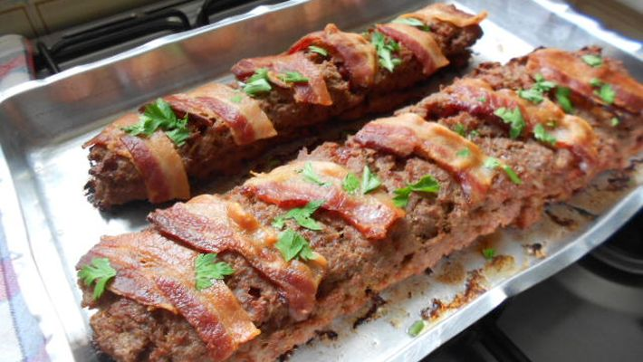
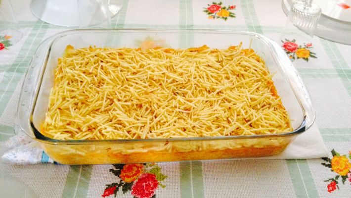
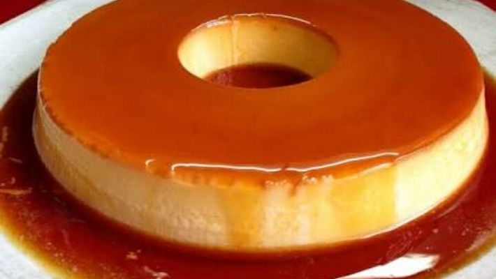

| Nome |
Foto |
Modo de preparo |
Ano |
| Bolo de carne |
 |
- 1/2 kg de carne moída
- 1 pacote de sopa de cebola
- presunto fatiado
- queijo fatiado
- cheiro verde
- sal a gosto
|
- Tempere a carne moída com a sopa de cebola, o tempero verde e o sal.
- Coloque a carne temperada sobre uma folha de papel laminado ou papel manteiga e abra a massa com um rolo, na espessura de 1 cm, mais ou menos.
- Forre a carne com o presunto e o queijo, pode-se colocar também milho verde, ervilha e requeijão.
- Enrole a carne, com ajuda da folha de papel laminado ou manteiga, em forma de rocambole.
- Leve ao forno, em temperatura alta, por mais ou menos 30 minutos, ou no microondas por 15 minutos.
- Bom apetite!
|
| Fricassê de frango |
 |
- 1 lata de creme de leite
- 1 lata de milho verde
- 1 copo de requeijão cremoso
- 100 g de azeitonas sem caroços
- 2 peitos de frango cozidos e desfiados
- 200 g de mussarela fatiada
- 100 g de batata palha
- 1 xícara de água
- 1 pitada de sal
|
- Cozinhe os peitos de frango, desfie e reserve.
- No liquidificador, bata o milho, o requeijão, o creme de leite e a água até obter uma consistência cremosa.
- Leve ao fogo o frango desfiado e o creme batido no liquidificador.
- Refogue e acrescente as azeitonas e o sal até obter uma textura firme.
- Despeje em uma assadeira, cubra com mussarela e leve ao forno até borbulhar.
- Finalize com a batata palha e está pronto para servir.
|
| Pudim |
 |
Pudim
- 1 lata de leite condensado
- 1 lata de leite (medida da lata de leite condensado)
- 3 ovos inteiros
Ingredientes da calda
- 1 xícara (chá) de açúcar
- 1/2 xícara de água
|
Pudim
- Primeiro, bata bem os ovos no liquidificador.
- Acrescente o leite condensado e o leite, e bata novamente.
Calda
- Derreta o açúcar na panela até ficar moreno, acrescente a água e deixe engrossar.
- Coloque em uma forma redonda e despeje a massa do pudim por cima.
- Asse em forno médio por 45 minutos, com a assadeira redonda dentro de uma maior com água.
- Espete um garfo para ver se está bem assado.
- Deixe esfrirar e desenforme
|